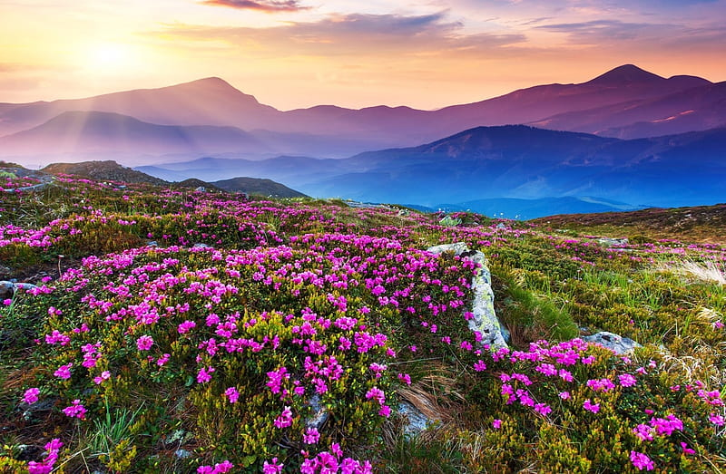

Travels Blogs
Exploring the Enchanting Charms of Uttarakhand: A Haven for Travel Enthusiasts
Nestled in the lap of the majestic Himalayas, Uttarakhand stands as a testament to nature's unparalleled beauty and spiritual aura. This northern state of India, often referred to as "Devbhoomi" or the land of the gods, holds a special place in the hearts of travelers worldwide. From snow-capped peaks to serene lakes, lush forests to sacred temples, Uttarakhand offers a plethora of experiences that cater to every traveler's desires. Let's delve into why Uttarakhand is celebrated as a quintessential destination for travel enthusiasts. 1. Spiritual Sanctuaries: Uttarakhand is renowned for its spiritual significance, housing some of the holiest Hindu pilgrimage sites. The sacred town of Rishikesh, situated on the banks of the divine Ganges River, attracts seekers from far and wide for yoga, meditation, and spiritual enlightenment. The tranquil atmosphere and the resonating chants of mantras make Rishikesh an ideal retreat for introspection and rejuvenation. 2. Adventure Capital: For adrenaline junkies, Uttarakhand offers a playground of thrilling activities. The hill station of Mussoorie entices trekkers with its scenic trails and panoramic vistas. The challenging terrain of the Garhwal and Kumaon regions beckons avid mountaineers and rock climbers. The roaring rapids of the Ganges River in Rishikesh are perfect for white-water rafting enthusiasts. Whether it's trekking, camping, river rafting, or paragliding, Uttarakhand promises an adventure of a lifetime. 3. Breathtaking Landscapes: Uttarakhand boasts an unparalleled natural splendor that captivates travelers with its diverse landscapes. The UNESCO World Heritage Site of Valley of Flowers, adorned with a kaleidoscope of vibrant blooms, is a paradise for nature lovers and photographers alike. The picturesque hill station of Nainital, with its shimmering lakes and lush greenery, offers a tranquil retreat amidst the Himalayan foothills. The majestic Nanda Devi and Trishul peaks stand tall, casting a spellbinding spell on all who behold them. 4. Rich Cultural Heritage: Uttarakhand's rich cultural tapestry is woven with age-old traditions, folk music, and colorful festivals. The vibrant celebrations of festivals like Kumbh Mela, Makar Sankranti, and Navratri offer a glimpse into the state's cultural vibrancy and religious fervor. The traditional dance forms of Garhwali and Kumaoni showcase the region's rich cultural heritage, resonating with the rhythms of the mountains. 5. Wildlife Encounters: Uttarakhand is blessed with an abundance of biodiversity, making it a haven for wildlife enthusiasts. Jim Corbett National Park, India's oldest national park, is home to a diverse array of flora and fauna, including the majestic Bengal tiger. The UNESCO World Heritage Site of Nanda Devi Biosphere Reserve harbors rare species like snow leopards, Himalayan musk deer, and elusive Himalayan birds, offering a glimpse into the region's pristine wilderness. In conclusion, Uttarakhand's allure lies in its ability to enchant and inspire travelers with its spiritual sanctuaries, adrenaline-pumping adventures, breathtaking landscapes, rich cultural heritage, and abundant wildlife. Whether you seek solace in the serenity of the mountains or seek thrills in the heart of nature, Uttarakhand welcomes you with open arms, promising an unforgettable journey of discovery and exploration.

Comments